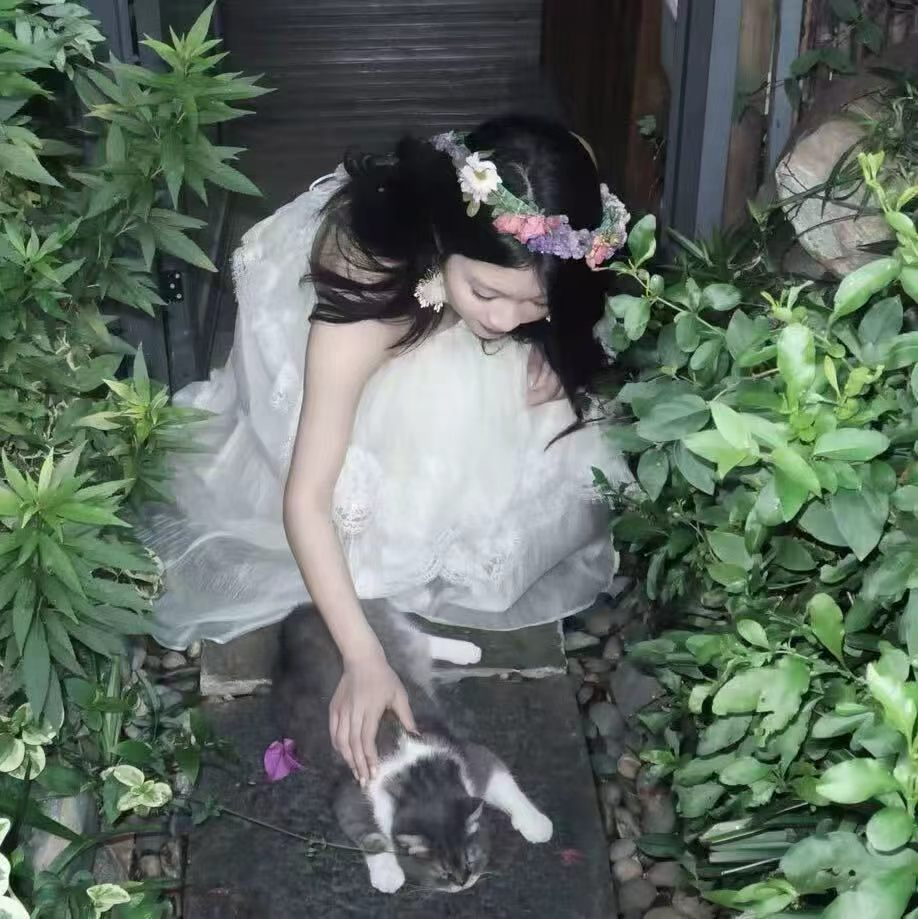
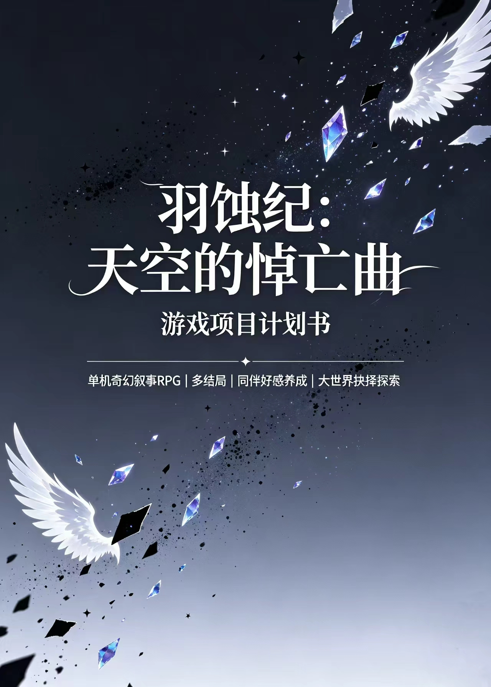

羽蚀纪 · 天空的悼亡曲
制作组成员项目统筹人工智能与工商管理

镜头之外,是另一种松弛感
在制作组里主要承担的部分

《羽蚀纪:天空的悼亡曲》
梳理开发目标与阶段划分,制定时间线与里程碑节点,提前排查可能拖慢进度的风险点。
对接策划、美术、程序各条线,跟进任务进度,协调排期冲突,保证信息在组内同步。
设计测试用例,记录并跟踪问题,组织内部试玩收集反馈,推动修复形成闭环。
关于加入《羽蚀纪》的理由
大家好,我是李可依,人工智能与工商管理专业在读。在《羽蚀纪:天空的悼亡曲》这个项目里,我主要负责项目计划、组内统筹和游戏测试——把控制作进度,协调策划、美术、程序之间的沟通节奏,并在版本迭代阶段设计测试用例、跟踪问题、组织内部试玩收集反馈。最早决定加入这个项目,是因为很喜欢"羽蚀"这个世界观本身:一个被黑色星尘侵蚀、四大种族彼此猜忌的世界,主角作为没有翅膀却对污染天生免疫的"无羽者",要在坠落中找到自己的位置——这种设定让我很想知道故事会往哪里走,也很想参与到把它做出来的过程里。比起单一的技能产出,我更享受在项目里"把事情串起来"的工作:定节奏、盯进度、找问题,让团队里的每个人都能把精力放在真正重要的创作部分上。